Fourier Series
Sine and cosine waves can make other functions!
Here two different sine waves add together to make a new wave:

Try "sin(x)+sin(2x)" at the function grapher.
(You can also hear it at Sound Beats.)
Square Wave
Can we use sine waves to make a square wave?
Our target is this square wave:
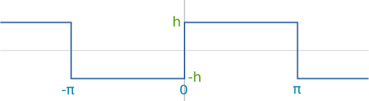
Start with sin(x):
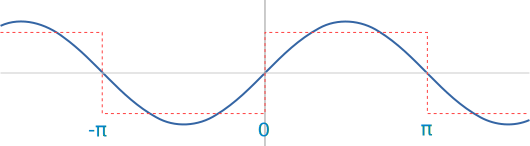
Then take sin(3x)/3:
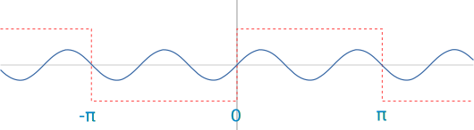
And add it to make sin(x)+sin(3x)/3:
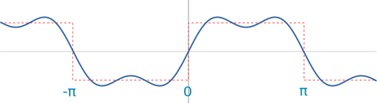
Can you see how it starts to look a little like a square wave?
Now take sin(5x)/5:
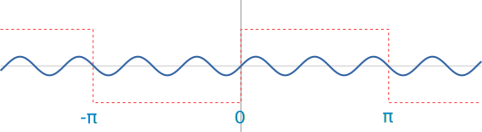
Add it also, to make sin(x)+sin(3x)/3+sin(5x)/5:
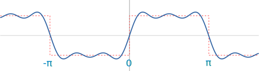
Getting better! Let's add a lot more sine waves.
Using 20 sine waves we get sin(x)+sin(3x)/3+sin(5x)/5 + ... + sin(39x)/39:

Using 100 sine waves we get sin(x)+sin(3x)/3+sin(5x)/5 + ... + sin(199x)/199:
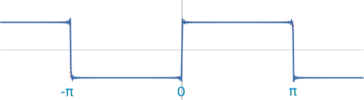
And if we could add infinite sine waves in that pattern we would have a square wave!
So we can say that:
a square wave = sin(x) + sin(3x)/3 + sin(5x)/5 + ... (infinitely)
That is the idea of a Fourier series.
By adding infinite sine (and or cosine) waves we can make other functions, even if they are a bit weird.
You might like to have a little play with:
And it is also fun to use Spiral Artist and see how circles make waves.
They are designed to be experimented with, so play around and get a feel for the subject.
Finding the Coefficients
How did we know to use sin(3x)/3, sin(5x)/5, etc?
There are formulas!
First let us write down a full series of sines and cosines, with a name for all coefficients:
Where:
- f(x) is the function we want (such as a square wave)
- L is half of the period of the function
- a0, an and bn are coefficients that we need to calculate!
It uses Sigma Notation to mean sum up the series of values starting at n=1:
- a1 cos(1x π/L)
- a2 cos(2x π/L)
- etc
We do not (yet) know the values of a1, a2 etc.
To find the coefficients a0, an and bn we use these formulas:
It is an integral, but in practice it just means to find the net area of
f(x) sin(nxπL)
between −L and L
We can often find that area just by sketching and using basic calculations, but other times we may need to use Integration Rules.
So this is what we do:
- Take our target function, multiply it by sine (or cosine) and integrate (find the area)
- Do that for n=0, n=1, etc to calculate each coefficient
- And after we calculate all coefficients, we put them into the series formula above.
Let us see how to do each step and then assemble the result at the end!
Example: This Square Wave:
- L = π (the Period is 2π)
- The square wave is from −h to +h
Now our job is to calculate a0, an and bn
a0 is the net area between −L and L, then divided by 2L. It is basically an average of f(x) in that range.
Looking at this sketch:
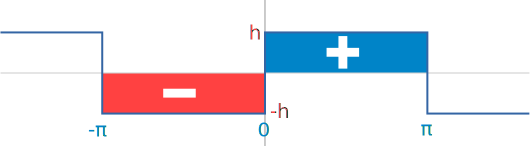
The net area of the square wave from −L to L is zero.
So we know that:
a0 = 0
For a1 we know that n=1 and L=π, so:
Which simplifies to:
Now, because the square wave changes abruptly at x=0 we need to break the calculation into −π to 0 and 0 to π,
From −π to 0 we know f(x) is simply equal to −h:
We can move the constant −h outside the integral:
Let's sketch cos(x):

The net area of cos(x) from -π to 0 is zero.
So the net area must be 0:
The same idea applies from 0 to π,
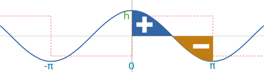
The net area of cos(x) from 0 to π is zero.
and so we can conclude that:
a1 = 0
Now let us look at a2
Aaaand ... the same thing happens!
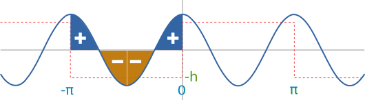
The net area of cos(2x) from -π to 0 is zero.
And:
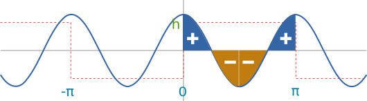
The net area of cos(2x) from 0 to π is also zero.
So we know that:
a2 = 0
In fact we can extend this idea to every value of a and conclude that:
an= 0
So far there has been no need for any major calculations! A few sketches and a little thought have been enough.
But now on to the sine function!
For b1 we know that n=1 and L=π, so:
Which simplifies to:
and as before, because of the abrupt change at x=0, we need to break the calculation into −π to 0 and 0 to π,
So, just looking at the integral from −π to 0, we know f(x) = −h:
We can move the constant −h outside the integral:
And sin(x) looks like this:
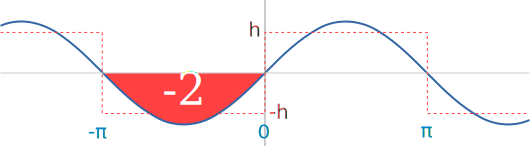
How do we know the area is −2?
First we use Integration Rules to find the integral of sin(x) is −cos(x):
Then we calculate the definite integral between −π and 0 by calculating the value of −cos(x) for 0, and for −π, and then subtracting:
[−cos(0)] − [−cos(−π)] = −1 − 1 = −2
So, between −π and 0 we get
−hπ(−2)
Next we look at the integral from 0 to π:
[−cos(π)] − [−cos(0)] = 1 − [−1] = 2
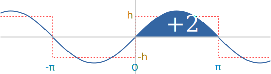
Now, combining both sides we get:
b1 = 1π[ (−h) × (−2) + (h) × (2) ] = 4hπ
For b2 we have this integral:
From −π to 0 it looks like this:
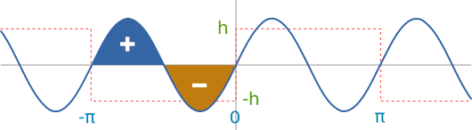
The net area of sin(2x) from −π to 0 is zero.
And we have seen this kind of thing before, so we conclude that:
b2 = 0
For b3 we have this integral:
From −π to 0 we get this interesting situation:
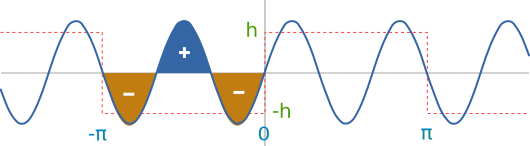
Two areas cancel, but the third one is important!
So it is like the b1 integral, but with only one-third of the area.
For 0 to π we have:
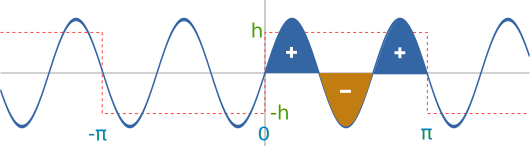
Again two areas cancel, but not the third
And we can conclude:
b3 = b13 = 4h3π
The pattern continues:
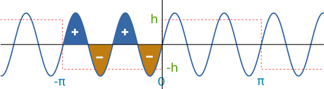
When n is even the areas cancel for a result of zero.
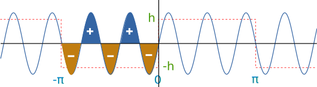
When n is odd, all except one area cancel for a result of 1/n.
So we can say
bn = 4hnπ when n is odd, but 0 otherwise
And we arrive at our last step: putting the coefficients into the master formula:
And we know that:
- a0 = 0
- an = 0 (all of them!),
- bn = 0 when n is even
- bn = 4hnπ when n is odd
So:
f(x) = 4hπ [ sin(x) + sin(3x)3 + sin(5x)5 + ... ]
In conclusion:
- Think about each coefficient, sketch the functions and see if you can find a pattern,
- put it all together into the series formula at the end
And when you are done go over to:
and see if you got it right!
Why not try it with "sin((2n-1)*x)/(2n-1)", the 2n−1 neatly gives odd values, and see if you get a square wave.
Other Functions
Of course we can use this for many other functions!
But we must be able to work out all the coefficients, which in practice means that we work out the area of:
- the function
- the function times sine
- the function times cosine
But as we saw above we can use tricks like breaking the function into pieces, using common sense, geometry and calculus to help us.
Here are a few well known ones:
| Wave | Series | Fourier Series Grapher |
|---|---|---|
| Square Wave | sin(x) + sin(3x)/3 + sin(5x)/5 + ... | sin((2n−1)*x)/(2n−1) |
| Sawtooth | sin(x) + sin(2x)/2 + sin(3x)/3 + ... | sin(n*x)/n |
| Pulse | sin(x) + sin(2x) + sin(3x) + ... | sin(n*x)*0.1 |
| Triangle | sin(x) − sin(3x)/9 + sin(5x)/25 − ... | sin((2n−1)*x)*(−1)^n/(2n−1)^2 |
Footnote. Different versions of the formula!
On this page we used the general formula:
But when the function f(x) has a period from -π to π we can use a simplified version:
Or there is this one, where a0 is rolled into the first sum (now n=0 to ∞):
But I prefer the one we use here, as it is more practical allowing for different periods.